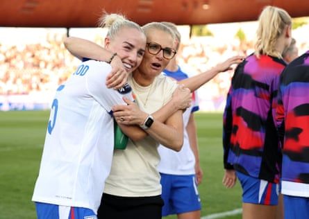

What was all the fuss about? On Saturday night England were staring into the abyss after a largely flat, listless defeat against France. Now their Euro 2025 campaign is up and running, a dominant dispatching of the Netherlands giving them a foot in the quarter-finals.
This was a warning shot to the rest; a clear message that the reigning champions will not fade into the night. Originally billed as a knife-edge contest between close rivals, the tie turned into a 4-0 rout under an azure Zurich sky.
It was some way to banish the clouds that had begun to form over England and their manager, Sarina Wiegman. She has won the European Championship with both of the countries on show in this fixture, but questions were asked of her decisions after England’s opening-night flop.
In their evolving iterations, the Lionesses have barely missed a beat at major tournaments in the past decade. For the first time during this sport’s boom years, misgivings were growing in volume. They knew that losing again could mean an early flight home, a first group-stage exit of any kind since 2013 and an unprecedented barrage of criticism.
Switzerland’s biggest city was, once again, an amenable host. The sun shone again after taking a long weekend off; the travelling Dutch contingent, a brilliant orange mass of thousands, marched two miles from the designated fan zone to Stadion Letzigrund. England’s team bus was trumpeted into the venue by the fans’ travelling band when it arrived at 4.15pm. Crowds over the past eight days have hit record levels; the atmospheres have been warm and generous but the stakes here were lost on nobody.
Wiegman’s players embraced the occasion fully. They swarmed over the Netherlands immediately and nerves were settled when Lauren James, the lavishly gifted Chelsea forward, scored an opening goal that justified some of Wiegman’s biggest selection calls. There had been plenty of scrutiny on the goalkeeper, Hannah Hampton, who has taken the place of the Euro 2022 winner Mary Earps. One of the reasons for Hampton’s presence is her ability on the ball: she possesses the composure and range expected of a keeper in the modern game.
In the 22nd minute she split the Dutch defence with a raking 60-yard pass that sent the striker Alessia Russo away. Russo found James, who cut inside and blasted a thrilling finish inside the near post. Question marks had hovered around James’s presence in the team that faced France; she has been recovering from a hamstring problem but ran amok from her position on the right wing.
Sarina Wiegman embraces Alex Greenwood at full time.Photograph: Florencia Tan Jun/Uefa/Getty Images
England refused to let up. Their second goal, lashed in by Georgia Stanway just before half-time, was equally satisfactory. Stanway is coming back from injury troubles of her own and, like James, appears to be finding form and fitness at the right time.
Prince William, who took his place in the stand before kick-off, was certainly finding his journey to be worthwhile. He had travelled to Switzerland the day after welcoming Emmanuel Macron and his wife, Brigitte, to Windsor Castle for their state visit. That had been a crucial moment for the UK’s standing on the European stage; he could take pleasure in the fact England bolstered their own continental reputation here.
In truth England did not display any uncertainties all evening. The match was made safe on the hour when James, shooting towards that vivid and now becalmed Dutch support, coolly swept her second goal past Daphne van Domselaar. The teams had traded victories last year in the Nations League and most pundits had expected the game to be close. But those brass players among the crowd could merrily run through renditions of Sweet Caroline and their new favourite, a version of the Champs’ song Tequila using Wiegman’s first name.
Ella Toone, restored to the starting lineup, added a fourth and ensured volumes remained high. England had been vociferously backed throughout, the noise clearly a notch or two higher than during their opener. It was the sound of a fanbase who have no intention of cutting the party short just yet. “I would not expect 4-0, absolutely not,” Wiegman said after navigating a potentially decisive moment in her tenure. She is four more wins from rendering those concerns a distant, eccentric memory.
The job is not complete. England must still avoid a surprise against Wales, the tournament’s rank outsiders, in St Gallen on Sunday. They will progress to the last eight with a win but cannot afford to be complacent in a keenly contested “derby” match. Should they escape unscathed, the dream will be firmly alive once more.
“This is about showing who we are,” Stanway said as her teammates soaked in the mixture of adulation and relief. “We want to go back to proper England.” They have done that with the most emphatic of statements.